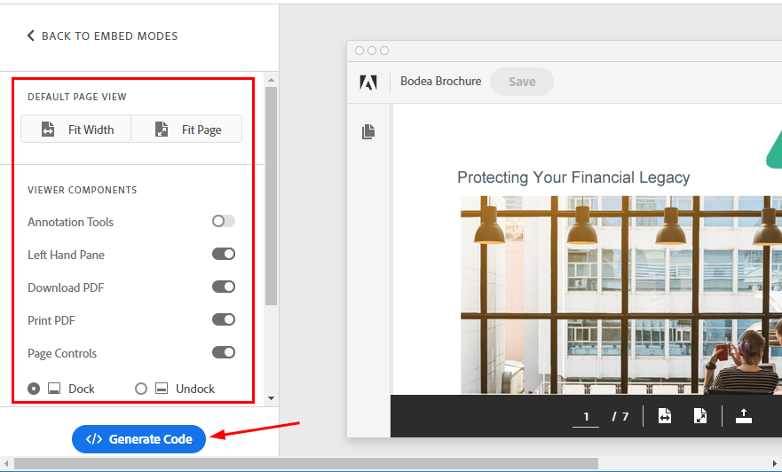
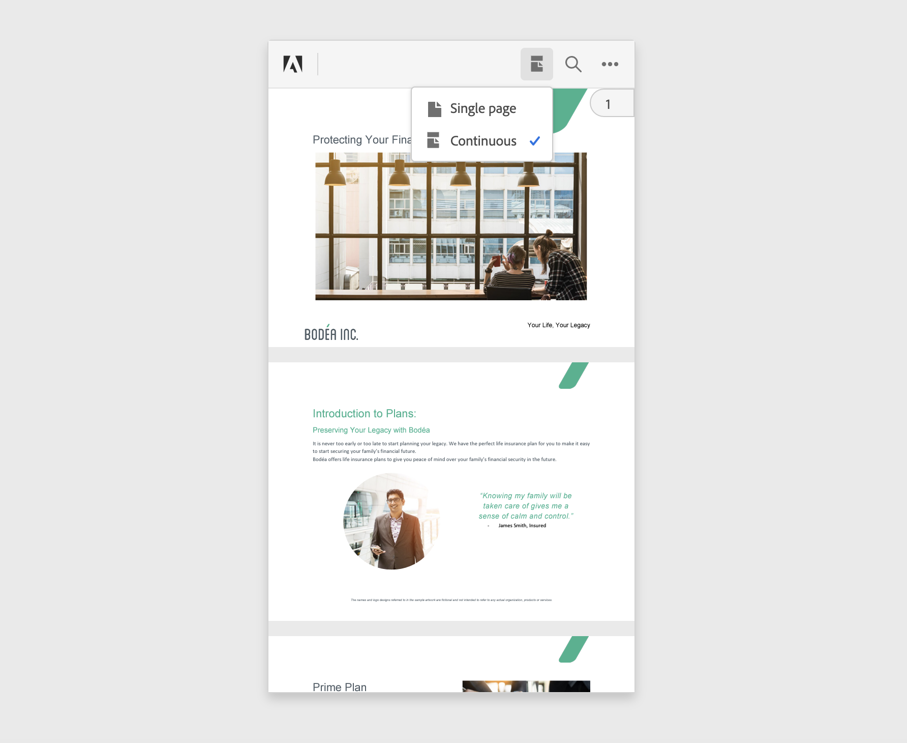
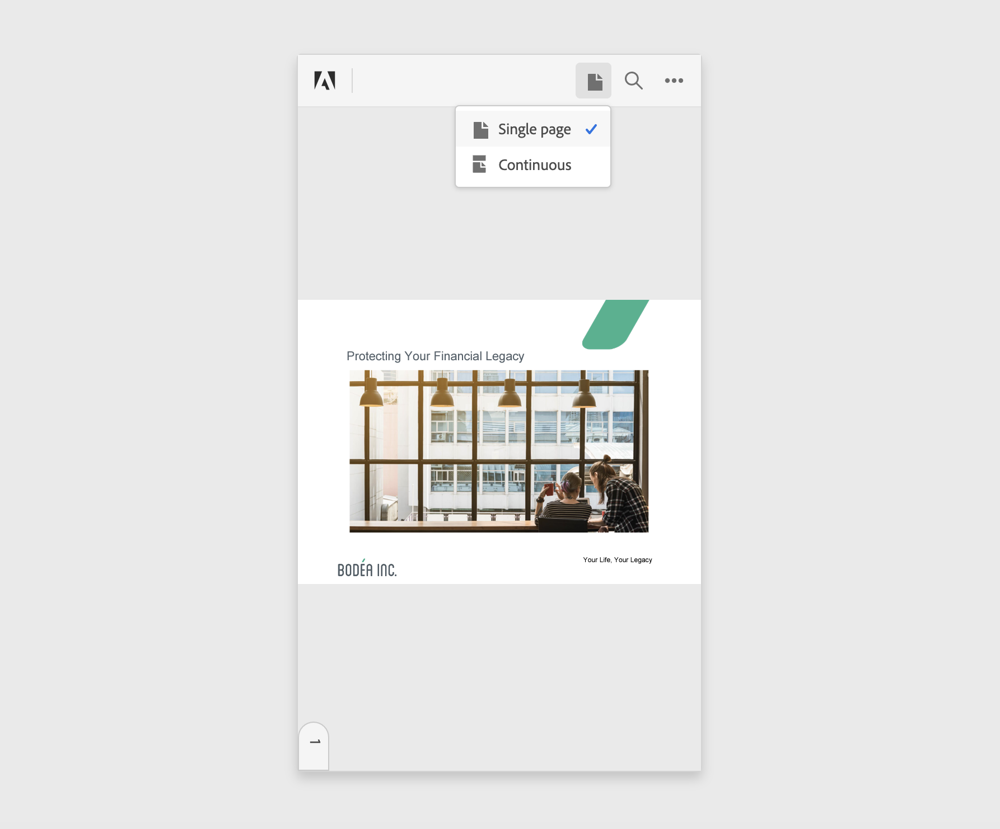
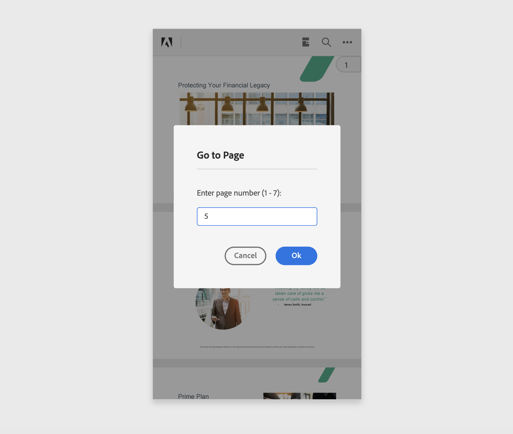

Quickstarts¶
The Document Services PDF Embed API allows you to embed a PDF viewer in your web applications with only a few lines of code. With options for controlling how a PDF appears and functions, your applications can deliver the rich and compelling digital document experiences to your customers expect and need.
Easy-to-use, JavaScript-based interfaces are the PDF Embed API’s foundation. Simplicity is designed in so that developers can harness the power of integrated PDF in their web content. With the ability to natively display PDF in an environment you control, you no longer need to rely on Reader download buttons, 3rd party apps, and PDF viewers that care little for PDF standards. With web-based JavaScript and in-page JS options, displaying a PDF on the web couldn’t be easier. And it’s simple: a few of lines of code are all you need to get started.
Tip
Check out the online demo, and view the code to see how easy it is!
Getting credentials¶
You’ll need a client ID to use the Document Services PDF Embed API. To get one, click HERE, and complete the workflow.
Copy it. Run it.¶
The quickest way to get up and running is to simply copy the code below to an index.html file and open it in a browser. The example already points to an online PDF, and you do not need a client ID to run the viewer on your machine.
If you wish to run it in a local web server (for example, localhost), then you need a valid client ID. You can generate a client ID from here. Insert the client ID within the double quotes in line 16 in the code below and run the webpage from your server.
There really are no environment setup steps or system requirements. Develop your web app using your preferred methods and tools.
1 2 3 4 5 6 7 8 9 10 11 12 13 14 15 16 17 18 19 20 21 22 23 24 25 | <!--Get the samples from https://www.adobe.com/go/pdfembedapi_samples-->
<!DOCTYPE html>
<html>
<head>
<title>Adobe Document Services PDF Embed API Sample</title>
<meta charset="utf-8"/>
<meta http-equiv="X-UA-Compatible" content="IE=edge,chrome=1"/>
<meta id="viewport" name="viewport" content="width=device-width, initial-scale=1"/>
</head>
<body style="margin: 0px">
<div id="adobe-dc-view"></div>
<script src="https://documentcloud.adobe.com/view-sdk/main.js"></script>
<script type="text/javascript">
document.addEventListener("adobe_dc_view_sdk.ready", function()
{
var adobeDCView = new AdobeDC.View({clientId: "<YOUR_CLIENT_ID>", divId: "adobe-dc-view"});
adobeDCView.previewFile(
{
content: {location: {url: "https://documentcloud.adobe.com/view-sdk-demo/PDFs/Bodea Brochure.pdf"}},
metaData: {fileName: "Bodea Brochure.pdf"}
});
});
</script>
</body>
</html>
|
Run ready samples¶
The PDF Embed API provides ready-to-run sample files for every feature.
Download the samples repo.
Place the files in any location that has internet access.
Navigate to the index.html file for any sample, and open it in a browser.
If a PDF renders in the web viewer, the sample has correctly executed.
Note
You do not need a client ID to run the samples locally.
Live demo¶
The Document Services PDF Embed API demo demonstrates how easy it is to configure the viewer and also provides a “generate code” button so that you can immediately see your UI changes reflected in a live code sample.
Mobile support¶
Much of what the PDF Embed API delivers is supported in the mobile devices. However, there are some limitations:
Annotation tools are not supported on phones in Full Window embed mode. These tools are supported on tablets (both Android and iOS).
Print functionality is unsupported.
PDF download is unsupported on iOS devices, but it is supported on Android.
PDF Embed API provides some optimizations in order to enhance the mobile view experience. These optimizations are available only in mobile phone browsers.
View modes in mobile browsers¶
PDF Embed API provides a couple of view modes on mobile phone browsers to enhance the viewing experience of the PDFs. Note that these modes are available only with Full Window embed mode.
Continuous view mode: This mode displays all the document pages one after the other and users can easily navigate through the pages by scrolling up or down. This is the default view mode to render PDFs in mobile phone browsers.
Single Page view mode: This mode displays only a single document page at a time and doesn’t show any adjoining page. Users can use the swipe gesture to navigate to other pages which will be displayed one at a time.
The view mode toggle is available in the top bar. Click on the toggle and select the desired view mode from the dropdown.
Continuous view mode
Single page view mode
These view modes can also be set using the configuration variable defaultViewMode. Set the appropriate value of the variable and pass it as a preview configuration to the previewFile API. For details, see Menu and tool options
Go to a Page¶
PDF Embed API provides a page handle for quick navigation to a specific page in the PDF. The page handle displays the current page number in view. The page handle appears on the right side for continuous view mode whereas it appears at the bottom for single page mode.
Click on the page handle and a dialog appears asking to enter a page number. Enter the desired page number and user will be navigated to that particular page.
Note that this functionality is available only with Full Window embed mode.
Zoom in¶
PDF Embed API also supports pinch zoom gesture and users can zoom-in to magnify the PDF content for better reading experience. This functionality is supported with all embed modes.
Feedback and forum¶
Customer feedback is particularly valuable as it helps the team validate use cases, guide development, and troubleshoot issues. Comments and questions are always welcome on the Community Forum.